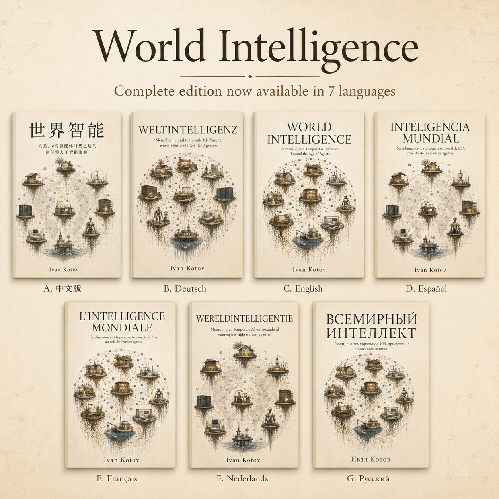

structure
Complete book
Prologue + Chapters 1–22 + Epilogue.

Complete multilingual book · v1.0.0
Humans, c, and Temporal AI Presence Beyond the Age of Agents
A complete work by Ivan Kotov about people, c, temporal AI presence, memory, governed authority, embodiment, infrastructure, experience, and distributed intelligence.
Edition
structure
Prologue + Chapters 1–22 + Epilogue.
languages
English, Russian, French, German, Spanish, Dutch, and Simplified Chinese.
formats
Canonical Markdown, fixed-layout PDF, editable DOCX, and FB2.
release boundary
Immutable tagged links, SHA-256 checksums, a release manifest, and complete language ZIPs.
Read and download
| Language | Direct v1.0.0 files | Full matrix |
|---|---|---|
English (en-GB) |
Open section | |
Русский (ru) |
Open section | |
Français (fr-FR) |
Open section | |
Deutsch (de) |
Open section | |
Español (es) |
Open section | |
Nederlands (nl-NL) |
Open section | |
简体中文 (zh-CN) |
Open section |
All links above are pinned to the immutable v1.0.0 tag or release. The complete package preserves each language’s Markdown, PDF, DOCX, FB2, cover, rights metadata, manifest, and checksums.
Integrity
All seven complete language packages in one 98-file archive.
Download multilingual ZIPDetached checksums for all release files, including the release manifest.
Open checksumsMachine-readable filenames, sizes, hashes, languages, roles, and media types.
Open manifestArchival record
The complete multilingual edition v1.0.0 is archived on Zenodo.
Version DOI: 10.5281/zenodo.21497098
All-versions DOI: 10.5281/zenodo.21497097
Use the version DOI when citing this specific frozen edition.
Rights boundary
Copyright © 2026 Ivan Kotov. All rights reserved. Non-commercial sharing of a complete, unmodified publication file is permitted only under the conditions in the repository LICENSE.
No audiobook, narration, public-recitation, text-to-speech, synthetic-voice, voice-cloning, podcast, broadcasting, translation, adaptation, derivative, commercial-dataset, or commercial model-training licence is granted.
This book is not presented as a peer-reviewed proof, protocol replacement, proof of consciousness, legal-personhood claim, open-source work, open-content work, or public-domain work.
Publication history
This page indexes the canonical complete multilingual edition. The earlier serial publication remains available as a separate historical surface and does not replace this v1.0.0 release.